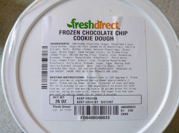

FreshDirect freebies
About six months ago, Nathan and I accepted a delivery from FreshDirect that contained, in addition to our normal groceries, four boxes of Aunt Jemima frozen waffle products. At first I thought the two of us needed to have a talk, because I know Nathan has a secret craving for sweet breakfast treats. Maybe he was tired of my salty bagels. Then I realized it was a packing error, and we hadn’t been charged for it.
As FreshDirect has gotten more popular around the city, and as competition has increased from places like Whole Foods and Trader Joe’s, they’ve starting sending the most bizarre things our way. Sometimes it’s on purpose, sometimes not. Last week, we got a big box of tall kitchen bags (not on the packing slip). This morning, in addition a promotional packaged, prepared meal (you know how much I love those), we got a half gallon of 1% milk. This is especially weird because they did it on purpose—it’s listed as a “Free Sample” on the packing slip—and because we order whole milk almost every week. Lastly, and this is sort of annoying because my freezer is full, we got a 25-ounce tub of frozen cookie dough:

I’m starting a category here of the weird free stuff we get from FD. I’m not complaining; I love freebies. But how did they decide to give us milk? Maybe they have a big bin of surplus products, and if you’re a regular customer they just starting throwing extra stuff in your boxes. I say keep it coming.
Comments
I’ve received 25 pounds of meat free although under different circumstances. Bought one of their bulk meat deals, they forgot to deliver that box, I called up, they confirmed with driver it was missing, rescheduled a delivery for 2 days later. 1 hour later the driver comes back with the original beef order, doesn’t ask for a signature. 2 days later I have 50 lbs of meat in my apt.
Usually FD forgets things in my order- maybe 1/3 orders is missing an item and of course it’s always the key piece to that evening’s meal. Never got any real freebies though.
What are the ingredients in the cookie dough? Does it have a bunch of junk in it or good stuff like butter and eggs, so that you would conceivably actually bake and eat it?
Well you can sort of see on the label that it has approximately 9894872 different ingredients in it. I’ll just hang onto them and pop them in the oven when we have company or something.
JMoney: I can’t believe you ordered 25 pounds of meat and ended up with 50! Did you ever finish it? They finally stopped forgetting things in my order; maybe they were tired of my constant complaining.
We gave away 5 or 6 steaks to my mom, promptly invited some friends over for a roast, and crammed the rest into the freezer (we get them vacuum packed). It’s lasted an insanely long time. Every now and again I’ll move something around in the freezer and find some contorted frozen steak hidden in there.
That’s funny—I ordered tall kitchen bags to be delivered on Sunday- 4/2 and didn’t get them. Could you have gotten my garbage bags? Instead I received 6 cans of chicken noodle soup that I didn’t order— and the cookie dough/milk.
I got the milk and cookie dough as well.
Max: that’s hilarious. I bet I do have your tall kitchen bags. Enjoy your soup!
Steve: yes, I apparently lots of people were subjected to this strange promotion.
I also got the cookie dough and milk. They’re always screwing up my order, so I thought it was a mistake, but it said right on the packing slip that they were freebies.
Has anyone made the cookies? They’re not awful. It certainly is convenient to have them shaped and frozen like that. Maybe when I finish them (if ever), I’ll refill the tub with homemade dough.
I have to say as a new freshdirect customer I am looking forward to some cookie dough. I’m setting myself up for diappointment if i don’t get something free now ;)
Hi I’m new to NYC and was told for your first 2 orders you get 25.00 off if you know the code. When you call they wont tell you. I have looked in every paper and can’t find it. Anyone know it??
Thanks so much
Hey there!
So I was told about getting $50 for new customers but like Robyn NO ONE is giving me that code. Then a chef friend gave me a a coupon code for $75 that she got for new customers with corporate orders, she’s already an existing customer which is why she gave it to me. long story short they dont deliver to my area & when I offered to pick it up at there LIC facility they said NO!! Not with the discount. So at this point its just personal. I’m feeling like david v.goliath!! Can anyone help??
thanks!
I am a regular fresh direct customer. Just so you know, the cookie dough and milk was actually not a screw up. They had it been promoting it for that week. Everyone who ordered that week got the milk and cookies free.
The current promotion for new customers is 25% off your first two orders. Enter code FEB
CODE: FEB50E
I NEVER get any FD freebies, at least not ones that aren’t advertised. :(
My order came with a huge box of goods, one of the “goods” was a bottle of vinegar that had broken in shipment. My house smelled like douche for a couple of days, it was lovely. :)
FD is a huge convenience, if they would get the friggin’ order right. I’m not kidding, but EVERY single order is missing something, and usually something that was desperately needed like a certain paper product that adorns every natural restroom in the US.
Add a comment